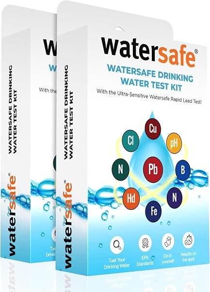
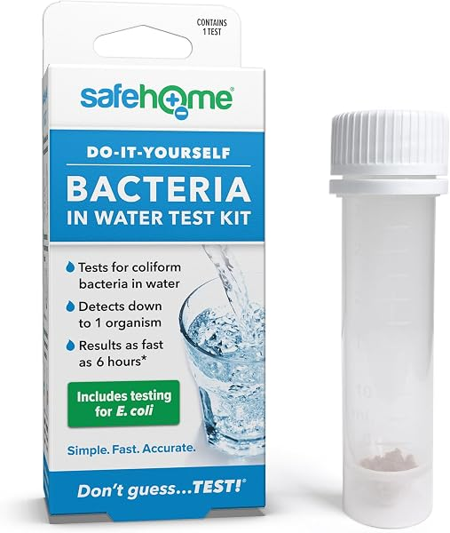
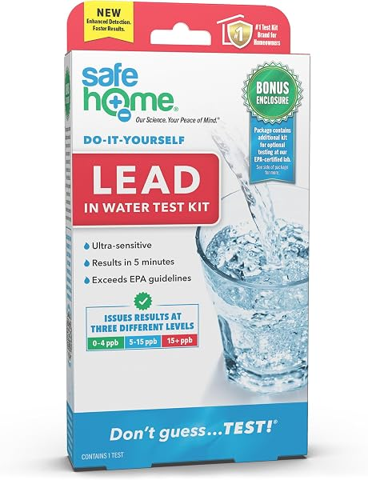
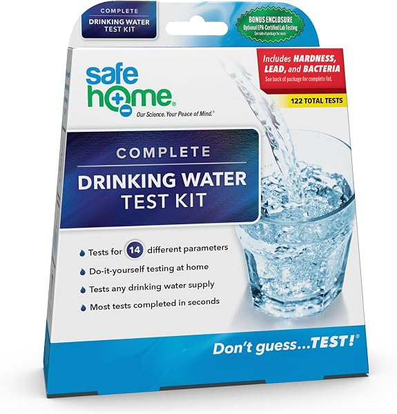

Water Test Kits and TDS Meters: How to Test Tap and Well Water (2026)
PureFlow Lab is reader-supported. We may earn a commission when you buy through links in this guide — at no extra cost to you. As an Amazon Associate, we earn from qualifying purchases. See our Disclosure for details.
Testing your water first tells you what you're actually filtering for. A TDS meter is a cheap way to check whether an RO system is working, but it can't identify specific contaminants. For that you need a test kit or a certified lab. This guide explains the differences and lists the kits available, each described from its own listing.
TDS meter vs. test kit vs. lab test
| Option | What it tells you | Best for |
|---|---|---|
| TDS meter | Total dissolved solids in ppm: a single number, not which substances | Checking RO performance and when a membrane is due |
| DIY strip/reagent kit | A screen for specific items like lead, bacteria, nitrates, hardness and pH | A quick first look at tap or well water |
| Certified lab test | Measured results for a long list of analytes | Well owners and anyone choosing a treatment system |
Private wells: test regularly
Public water systems are regulated and publish annual water quality reports. Private wells are the owner's responsibility, and the CDC recommends testing private well water at least once a year for germs and chemicals. A lab test that includes bacteria and nitrates is the usual starting point.
TDS meters

HM Digital TDS-3
0–9,990 ppm range, 1 ppm resolution, ±2% readout accuracy, built-in thermometer, hold function and 10-minute auto-off, with a carrying case, per the listing.
Check Price on Amazon →
Digital TDS Meter (TDS/EC/Temp)
Measures TDS, EC and temperature, 0–9,990 ppm, with a backlit display and auto-lock readings, per the listing.
Check Price on Amazon →How to use one on an RO system: measure your tap water, then your RO water. The difference shows how much the system is removing. Record the RO reading when filters are new; a steady rise later suggests the membrane is wearing out.
DIY test kits

Varify 17-in-1 Drinking Water Test Kit
100 test strips in 5 sealed pouches plus 2 bacteria tests with 48-hour results; screens 17 parameters including chlorine, fluoride, lead and iron, per the listing.
Check Price on Amazon →
Watersafe Drinking Water Test Kit (2 pack)
Tests 9 contaminants including lead, bacteria, iron, copper, chlorine and nitrates for tap or well water; detects lead at 5 ppb, per the listing. Made in the USA.
Check Price on Amazon →
Safe Home DIY Bacteria Test Kit
Detects coliform bacteria including E. coli; results in as little as 6 hours and up to 72, per the listing. Made in the USA.
Check Price on Amazon →
Safe Home DIY Lead Test Kit
Three lead-level ranges (0–4, 5–15 and 15+ ppb) with 5-minute results, plus an optional mail-in kit for an EPA-certified lab (lab fees extra), per the listing.
Check Price on Amazon →Lab-grade testing by mail

Tap Score Advanced Home Water Test
116 analytes including metals, bacteria, nitrates and disinfection byproducts, analyzed by EPA/NELAC/ISO and state-certified labs; report about 5 business days after the lab receives your sample, per the listing.
Check Price on Amazon →
Safe Home Complete Drinking Water Combo Kit
10 screening strips covering 12 parameters, plus an optional mail-in kit for Safe Home’s EPA-certified lab (up to 48 parameters, fees extra), per the listing.
Check Price on Amazon →What to do with your results
- High TDS, lead, nitrates or fluoride: an RO system is designed for dissolved contaminants. See Best Reverse Osmosis Systems, or RO for well water.
- Bacteria in a well: contact your local health department for guidance on disinfecting the well, and retest.
- Chlorine taste only: a carbon filter may be enough; see Whole House RO vs. Whole House Filter.
Primary sources
Check certifications and water-quality rules yourself: